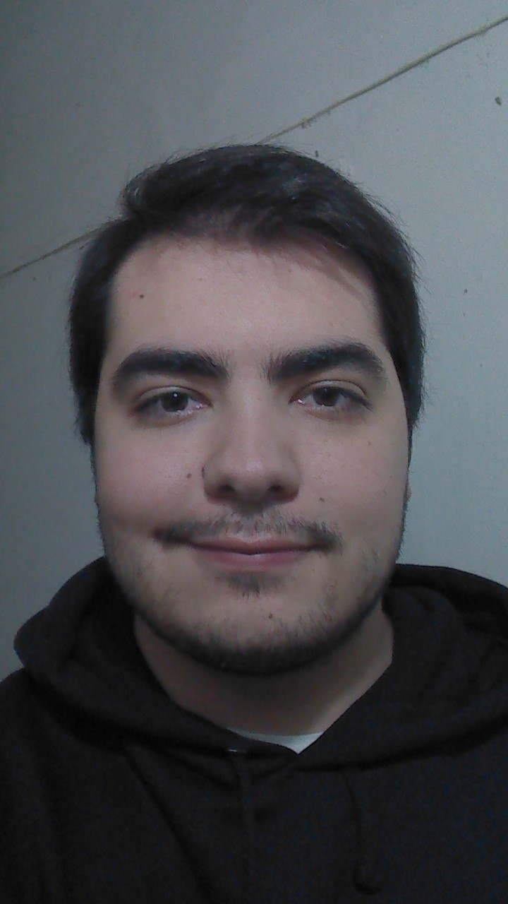

Descripcion Personal
Proactivo y preparado para resolver problemas. Enfocado en cumplir objetivos. Rápido para aprender y adaptarse anuevos sistemas y ambientes. Muy buen manejo de recursos tecnológicos desde mantenimiento tanto de Hardware como de Software de PCs. Además de estudiar programación, también me gusta aprender sobre seguridad informática.
Mi objetivo personal es: "Nunca dejar de aprender cosas nuevas y desarrollar las habilidades necesarias para destacarme en el mundo de la tecnologia. Por este motivo es que estoy estudiando la carrera de Desarrollador Web con Soy Henry, con las expectativas de entrar al mercado laboral bien capacitado para resolver cualquier problema que se presente."
Educacion
- CURSANDO LIC. EN SEGURIDAD
INFORMATICA
UNIVERSIDAD SIGLO 21
CORDOBA, AR
2022 - GRADUADO CON BACHILLER EN SALUD E
HIGIENE
INSTITUTO GENERAL SAN MARTIN
CORDOBA, AR
2013
Experiencias Laborales
- Soporte IT Onsite y Asset Manager. Atos-FCA Automobiles, 05/02/2018 to 28/02/2019.
- Soporte IT Onsite y HelpDesk. Intertron-Ecogas, 01/12/2021 to 29/04/2022.
Los primeros dos meses fui parte del grupo de tecnicos encargado de el Proyecto de Recambio propuesto por FCA. Ademas de el Proyecto, tambien estuve encargado de atender a los Usuarios, diagnositocar y resolver problemas tanto de Hardware como de Software, a traves del sistema de tickets de Service Now llamado DriveIT. Lo siguientes cuatro meses, me movieron al puesto de Asset Manager para cubrir una vacante, pero me dejaron de forma permanente por buen desempeño. Mis responsabilidades abarca la correcta carga y actualizacion de activos a traves de tickets en DriveIT. Creacion de consultas en la herramienta DriveIT para facilitar el acceso a los datos. Creacion y mantenimiento de files de Inventario segun sus diferentes estados, metodos de adquisicion, locacion, etc. Confeccion de Reportes semanales y mensuales a pedido de el encargado de Sistemas de FCA, para la correcta imputacion de costos, estado de los assets, etc. Definicion de procesos y planes de accion de acuerdo a las pautas y normativas establecidas por FCA.
Mis principales responsabilidades involucran el atencion por VoIP a los usuarios de Ecogas, resolviendo sus problemas e indicando como proceder ante problemas no urgentes a traves del sistema de tickets de la empresa. Otra de mis responsabilidades es resolver tickets en la platafroma ServiDesk con incidentes, solicitudes, proyectos y otras tareas. Las tareas en cuestion varian desde cambio de perifericos a reemplazo de activos (CPU, Notebook, ThinClient, Celular, Tablet, etc) por diferentes motivos (Obsolencia, Fallas de equipamiento, mejoras, etc), instalacion de y actualizacion de SO Windows, instalacion y actualizacion de prograrmas de Microsoft, de la Empresa y de Terceros, mantenimiento y solucion de problemas con Maquinas Virtuales, actualizacion y mantenimiento del inventario, etc.
Cursos
- CYBER501x
Fundamentos de Ciberseguridad dictado por el Instituto de Tecnología de Rochester, Nueva York.Certificado de Cursado.Este curso duró 8 semanas y es parte de un programa llamado MicroMasters.
Disponibilidad
- Full Time